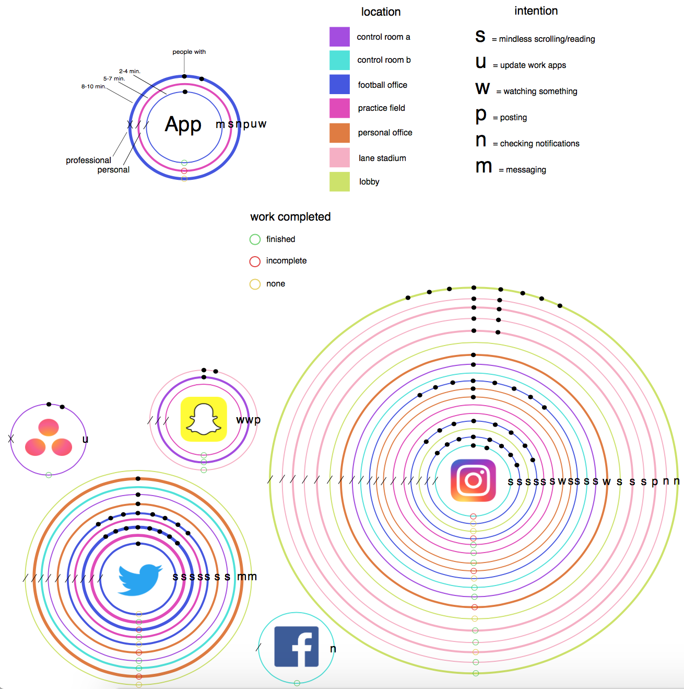

Introduction
During ENGL 3844, I collected data and used that data to create the following data story. I wanted insight into my productivity at work, so I tracked my app usage while I was at work and came up with these results.
Personal Practices
While collecting data, I had a spreadsheet to fill in with as much information as possible that I could use later on. I tracked which apps I was using at work, where I was when I used them, the times and how long I used each app, who I was with when I opened an app, what my intentions were while using the apps, what type of app each one was, and how much work I completed or did not complete while on my phone.
Data Visualization
As shown, the data visualization I created shows all of the data I collected in a smaller, easy to understand way. Each app's logo is prominent in the center, and the circles around the logos hold a lot of meaning. The thickness of the circle represents the timespan of using the app, and the color represents where I was at work when I used it. Each symbol on top of the circle also holds a meaning that can be seen in the visualization key at the top.
Social Practices
For a broader context, I researched information about how apps or websites use your information and sometimes without your knowledge. The video explains ways that social media sites share your information and how certain apps and websites track your location. Examples are provided as well as information about what you should do to prevent this from happening.